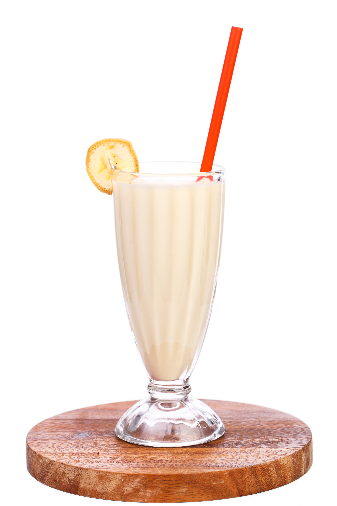

Banana Cream

Description
Banana cream is a cream-based dessert. It is based on Mrs Beeton's Book of Household Management
Ingredients
- 3 medium-sized bananas or 2 large-sized bananas
- ½ US pint (240 ml / 1 cup) double cream
- 1.5 oz (43 g / ⅕ cup) caster sugar
- 0.75 oz (21 g) leaf gelatine
- 1 tbsp warm water
- 1 wineglassful (175 ml / 5.9 oz / ¾ cup) Benedictine or Maraschino liqueur
- Pink food coloring
Steps
- Whip the cream in a mixing bowl until stiff peaks form.
- Pass the bananas through a fine sieve in another bowl. Add the stiffly-whipped cream and the liqueur, and mix lightly together.
- Dissolve the gelatine in the 1 tbsp warm water, stir in the sugar, and when sufficiently cool mix lightly with the cream mixture, adding food coloring drop by drop until a pale pink colour is obtained.
- Pour into the prepared mould, and chill until set.